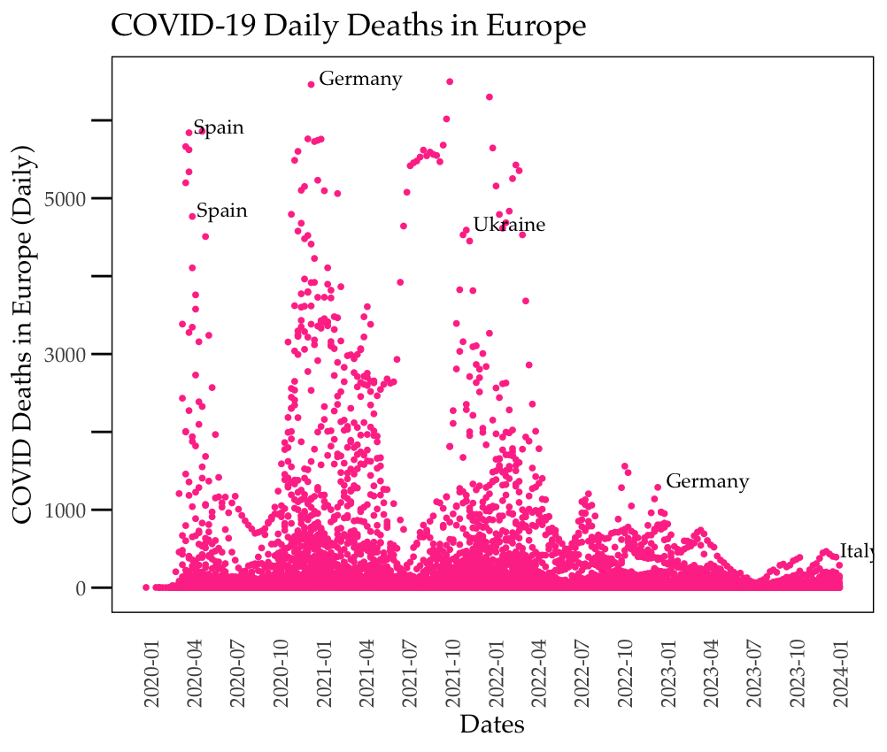

Assignment 3
1. Rerun murrell01.R
a. Choose one of the six charts and explain how it is configured by adding documentation to the codes.
The chart selected was the Barplot, below is the code for the graph.
# Barplot
par(mar=c(2, 3.1, 2, 2.1)) # This is used to set the margins of the plot and make sure each plot is produced individually.
midpts <- barplot(VADeaths, # This is to create the barplot for the VADeaths Dataframe
col=gray(0.1 + seq(1, 9, 2)/11), # This is to specify which color to use - here we are using gray
names=rep(““, 4))
mtext(sub(” “,”\n”, colnames(VADeaths)), # This adds texts to margins
at=midpts, side=1, line=0.5, cex=0.5) # This indicates the positions, axis, margins, and size
text(rep(midpts, each=5), apply(VADeaths, 2, cumsum) - VADeaths/2, # This adds labels to the bars in the bar plot and ‘rep’ repeats the middle point each 5 times
VADeaths, # test to be displayed
col=rep(c(“white”, “black”), times=3:2), # color of the text
cex=0.8) # size of the text
par(mar=c(5.1, 4.1, 4.1, 2.1)) # This resets the margins to the default after the plot has been created
2. Rerun anscombe01.R (in Teams folder)
a. Compare the regression models
Based on the regression model analysis, the four models in Anscombe have similar characteristics with almost similar intercepts and slopes, as well as consistent residual errors. The F-test values also indicate a strong positive significance. All the models also have a p test value that is below 0.01, further indicating the significance of the models and thus indicating a close fit to the data.
However, despite how similar these datasets are we notice very different graphical representations for each of them. This further highlights the importance of different datasets and understanding how to best visually represent each of them and emphasizes the need for careful observation and analysis.
b. Compare different ways to create the plots (e.g. changing colors, line types, plot characters)
Here we can see three different ways to create the plots. The first being the original, the second is with changing the colors, and this is changing the plotting character to an ‘x’. The symbol ‘x’ when used on these plots do not stand out as much as the original filled circle, the red also makes it dull compared to the orange filled circles used in the original plots. The graph line being blue like the original also stands out more than changing it to red.
3. Can you finetune the charts without using other packages (consult RGraphics by Murrell)?
Yes these charts can be fine tuned to use a serif font, try non-default colors, and use own plotting characters without installing other packages.
a. Use a serif font
Serif font or any other fonts can be inserted like so
par(family = “serif”)
b. Try non-default colors
Non-default colors can be implemented using the ‘col=’ can be used. Hex codes for colors can be inserted.
plot(pressure, pch=16, col=“#FF5733”, bg=“#D1E231”) # custom point color and background color
text(150, 600, “Pressure (mm Hg)\nversus\nTemperature (Celsius)”,
col=“forestgreen”, cex=1.2) # Custom color for the text
c. Use own plotting character
Pch can be used to customize plotting characters. The pch values range from 0 to 25. For example pch =19 would be filled circles as the plotting character and pch = 24 would be upward filled triangles.
plot(pressure, pch=24, col=“red”, bg=“yellow”, cex=1.5) # Use upward-pointing triangle with custom fill color text(150, 600, “Pressure (mm Hg)\nversus\nTemperature (Celsius)”, col=“green”, cex=1.2, family=“serif”)
4. How about with ggplot2? (use tidyverse package)
Yes, the charts can be finetuned. Overall the usage of ggplot simplifies the graphics. It allows for a wider range of complex but visually informative graphs to be created. Here is the histogram and boxplot from murrel using ggplot. We can see a clear distinction between the data making it easier to understand.
5. Pre-hackathon by team:
This code was edited and adapted with the assistance of AI to improve its functionality and effectiveness.
# Clear environment
rm(list = ls())
# Load required libraries
library(ggplot2)
library(dplyr)
library(lubridate)
library(scales)
# Load the dataset from OWID GitHub
url <- "https://github.com/owid/covid-19-data/raw/master/public/data/owid-covid-data.csv"
owideu <- read.csv(url)
# Filter out unwanted rows and select data for Europe
owideu <- owideu %>%
filter(!grepl("^OWID", iso_code), continent == "Europe")
# Convert date column to Date type and extract year and month
owideu$date <- as.Date(owideu$date)
owideu <- owideu %>%
mutate(year = year(date), month = month(date))
# Filter data for new deaths and dates before January 20, 2024
tt <- owideu %>%
filter(new_deaths > 0, date < "2024-01-20")
# Identify outlier countries and years for analysis
outlier_conditions <- list(Spain = "2020", Germany = c("2020", "2022-12"), Ukraine = "2021", Italy = "2024")
# Extract outliers
outliers <- tt %>%
filter((location == "Spain" & year == outlier_conditions$Spain) |
(location == "Germany" & (year == outlier_conditions$Germany[1] | (year == "2022" & month == "12"))) |
(location == "Ukraine" & year == outlier_conditions$Ukraine) |
(location == "Italy" & year == outlier_conditions$Italy)) %>%
group_by(location, year) %>%
filter((location == "Spain" & year == outlier_conditions$Spain & new_deaths %in% sort(new_deaths, decreasing = TRUE)[c(1, 3)]) |
(location != "Spain" & new_deaths == max(new_deaths, na.rm = TRUE))) %>%
ungroup()
# Create the plot
plot <- ggplot() +
geom_point(data = tt, aes(x = date, y = new_deaths), color = "violetred1", size = 0.7) +
labs(title = "COVID-19 Daily Deaths in Europe", x = "Dates", y = "COVID Deaths in Europe (Daily)") +
scale_x_date(labels = date_format("%Y-%m"), breaks = pretty_breaks(n = 30)) +
scale_y_continuous(breaks = seq(0, 6000, by = 1000), limits = c(0, 6500), labels = c("0", "1000", "", "3000", "", "5000", "")) +
theme_minimal(base_family = "Palatino") +
theme(axis.text.x = element_text(angle = 90, hjust = 1),
axis.ticks.y = element_line(color = "black"),
panel.grid = element_blank(),
panel.border = element_rect(color = "black", fill = NA),
axis.ticks.length = unit(3, "mm"),
axis.ticks.x = element_blank()) +
geom_text(data = outliers, aes(x = date, y = new_deaths, label = location), vjust = 0, hjust = -0.1, color = "black", size = 3, family = "Palatino")
# Print the plot
print(plot)